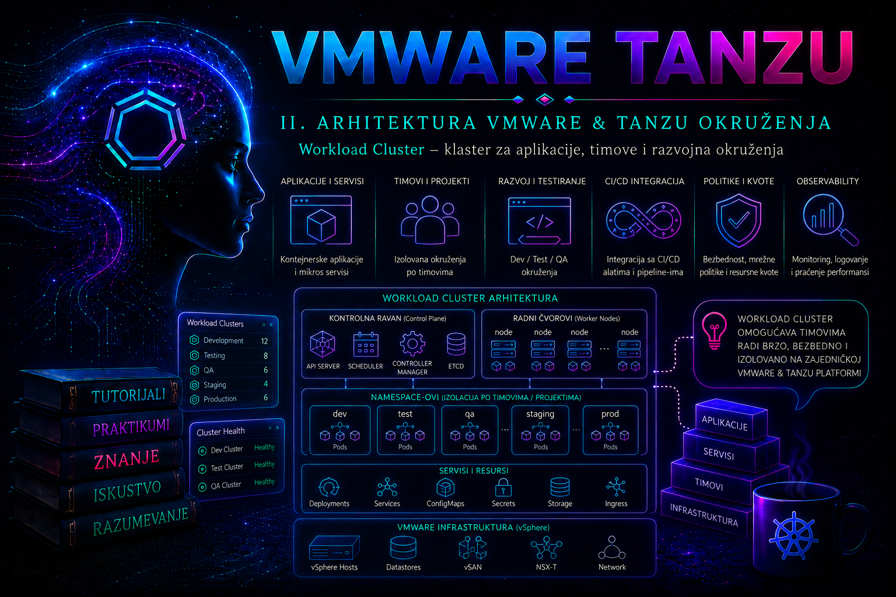

VMware & Tanzu

Uloga Workload Cluster-a u Tanzu arhitekturi
Workload Cluster je namenski Kubernetes klaster u kojem se izvršavaju aplikacije, razvojni alati i platformske usluge korisničkih timova. U aktuelnoj VMware terminologiji za klastere koje Supervisor obezbeđuje koristi se naziv vSphere Kubernetes Service cluster, odnosno VKS cluster. U starijim izdanjima dokumentacije i postojećim okruženjima isti koncept može biti označen kao Tanzu Kubernetes Grid Service cluster, TKG Service cluster ili Tanzu Kubernetes cluster. Administrator mora pre svake promene proveriti verziju vSphere okruženja, verziju VKS servisa i API koji se koristi, jer se dostupni ClusterClass objekti, promenljive i podržane Kubernetes verzije razlikuju.
Supervisor Cluster predstavlja upravljački Kubernetes sloj integrisan sa vSphere infrastrukturom. Workload Cluster je odvojen korisnički klaster čiji se control plane i worker čvorovi najčešće izvršavaju kao virtuelne mašine. Njegov životni ciklus pokreće se deklarativnim Kubernetes objektom u odgovarajućem vSphere Namespace-u, dok Supervisor kontroleri zatim kreiraju VM čvorove, mrežne interfejse, diskove, load balancer konfiguraciju i ostale zavisne resurse.
Ovo razdvajanje je važno jer infrastrukturni administrator i aplikacioni tim ne upravljaju istim slojem. Infrastrukturni administrator obezbeđuje Supervisor, namespace, dozvoljene VM klase, storage politike, mreže, Kubernetes izdanja i kapacitet. Administrator Workload Cluster-a upravlja čvorovima, Kubernetes nadogradnjama, sistemskim komponentama i pristupom klasteru. Aplikacioni timovi dobijaju prava unutar klastera potrebna za svoje namespace-ove i aplikacije, ali ne treba automatski da dobiju pravo da menjaju control plane, Cluster API objekte ili vSphere resurse.
U ovoj lekciji izraz VKS klaster označava workload, odnosno guest Kubernetes klaster kojim upravlja Supervisor. To nije isto što i Supervisor niti isto što i opšti pojam „workload cluster” u samostalnom Tanzu Kubernetes Grid okruženju. Ta terminološka disciplina je operativno važna: pogrešan kubeconfig kontekst može pretvoriti bezazlenu read-only proveru u promenu na pogrešnoj upravljačkoj ravni.
Verzijski modeli API-ja i vlasništvo nad željenim stanjem
U praksi se sreću dva modela. Legacy model koristi objekat TanzuKubernetesCluster iz API grupe run.tanzu.vmware.com; servis iz njega generiše Cluster API objekte. Aktuelni model koristi nativni Cluster resurs cluster.x-k8s.io/v1beta1 sa verzionisanim ClusterClass objektom porodice builtin-generic-v3.x. Ne smeju se istovremeno ručno menjati i legacy TKC i iz njega izvedeni Cluster objekat. Admission webhook takvu promenu s razlogom odbija jer TKC ostaje vlasnik željenog stanja.
| Okruženje | Autoritativni objekat | Administratorska odluka |
|---|---|---|
| Legacy ili još nemigriran klaster | TanzuKubernetesCluster | Promene se unose u TKC; izvedeni Cluster se posmatra read-only. |
| VKS 3.2 i noviji, nativni CAPI klaster | Cluster sa verzionisanim builtin-generic-v3.x ClusterClass-om | Topologija i podržane promenljive menjaju se na Cluster objektu. |
| Tranzicija sa TKC na nativni CAPI | Zavisi od završenosti vendor-procedure „retire TKC” | Ne uklanjati owner reference niti improvizovati migraciju; koristiti postupak podržan za instaliranu VKS verziju. |
Verzijska granica: TKC API je označen kao deprecated od VKS 3.2.0. Počev od VKS 3.4.0, TKC klaster ne može da se kreira niti nadogradi na VKR 1.33, a od VKS 3.5.0 ClusterClass tanzukubernetescluster više se ne koristi. VKS 3.2 i noviji uvode verzionisane builtin-generic-v3.x klase; konkretna klasa i njena šema moraju se očitati na Supervisor-u. Deprecation nije dozvola za brisanje TKC objekta: prelazak je kontrolisana migracija vlasništva.
Kako Workload Cluster radi
Provisioning počinje kreiranjem objekta vrste Cluster u namespace-u na Supervisor-u. Objekat opisuje željeno stanje: Kubernetes verziju, ClusterClass, broj control plane i worker čvorova, VM klase, storage klase i dodatne konfiguracione promenljive. Cluster API i VKS kontroleri porede željeno i stvarno stanje i pokreću usaglašavanje. Ako nedostaje worker čvor, kontroler kreira novu virtuelnu mašinu. Ako administrator promeni broj replika, kontroleri skaliraju odgovarajući MachineDeployment. Ako promena zahteva zamenu čvorova, obavlja se kontrolisani rollout umesto ručnog menjanja operativnog sistema unutar VM-a.
Aktuelna VKS izdanja mogu koristiti verzionisane ugrađene ClusterClass objekte, na primer klase iz porodice builtin-generic, dok starija ili migrirana okruženja često koriste tanzukubernetescluster. Naziv ClusterClass-a ne sme se pretpostaviti niti kopirati iz drugog sistema. Mora se očitati iz konkretnog Supervisor namespace-a, zajedno sa promenljivama koje ta klasa podržava.
Ispod topologije Cluster API održava lanac izvedenih objekata. Control plane kontroler upravlja skupom control plane Machine objekata i njihovim bootstrap i infrastrukturnim resursima. Svaka worker grupa iz machineDeployments proizvodi MachineDeployment, zatim MachineSet i pojedinačne Machine objekte. Infrastructure provider prevodi Machine u vSphere VM, bootstrap provider priprema inicijalnu konfiguraciju čvora, a Kubernetes kontroleri registruju Node. Zato „VM je uključen” nije isto što i „Machine je spreman”, niti je „Node je Ready” dovoljan dokaz da su CNI, CSI, DNS i aplikaciona dostupnost zdravi.
| Sloj ili objekat | Odgovornost | Tipična provera |
|---|---|---|
| Supervisor | Pokreće VKS kontrolere i upravlja infrastrukturnim objektima klastera | kubectl get pods -A i pregled statusa Supervisor servisa u vSphere Client-u |
| vSphere Namespace | Određuje dozvole, kapacitet, VM klase, storage politike i mrežni kontekst | kubectl config current-context i pregled namespace konfiguracije |
| Cluster objekat | Predstavlja željeno stanje Workload Cluster-a | kubectl get cluster i kubectl describe cluster |
| Machine i MachineDeployment | Predstavljaju control plane i worker virtuelne mašine | kubectl get machines,machinedeployments |
| Workload Cluster API | Prima aplikacione i administratorske Kubernetes zahteve | kubectl get --raw='/readyz?verbose' |
| Worker čvorovi | Pokreću podove i priključuju mrežne i storage resurse | kubectl get nodes i kubectl describe node |
Control plane, etcd i worker skupovi
VKS control plane tipično sadrži kube-apiserver, kube-controller-manager, kube-scheduler i etcd, raspoređene na control plane čvorovima prema podržanom VKS image-u. API VIP load balancer-a predstavlja stabilnu pristupnu tačku, ali ne stvara quorum: sa tri etcd člana klaster podnosi gubitak jednog člana, dok istovremeni gubitak dva člana prekida mogućnost bezbednog upisa. Zbog toga se control plane VM-ovi raspoređuju tako da kvar jednog ESXi hosta ili failure domain-a ne ukloni quorum; konačno ponašanje zavisi od vSphere HA/DRS dizajna i podrške konkretne verzije.
Worker čvorovi se grupišu u jedan ili više node pool-ova. Različite grupe omogućavaju različite VM klase, zone, oznake i taint-ove kada ih izabrani ClusterClass podržava. Više grupa nije samo estetska podela: može odvojiti sistemske, general-purpose, memory-intensive ili zone-specifične workload-e, ali povećava broj kapacitetskih i upgrade odluka. Taint bez odgovarajućeg toleration-a može ostaviti podove u stanju Pending; label bez stvarne infrastrukturne razdvojenosti ne predstavlja failure-domain zaštitu.
Životni ciklus čvora je zasnovan na zameni, a ne na dugotrajnom ručnom „negovanju” VM-a. Promena template-a ili Kubernetes verzije obično pokreće rolling replacement: pravi se nova Machine, čeka se njena spremnost, workload se premešta u skladu sa disruption pravilima, a stara Machine se uklanja. Dostupnost tokom tog procesa zavisi i od aplikacije: tri worker čvora ne pomažu Deployment-u sa jednom replikom, niti PDB može da garantuje raspoloživost ako nema dovoljno kapaciteta za novu repliku.
Control plane sa tri replike koristi se kada je potrebna otpornost na otkaz jednog control plane čvora. Jedna replika može biti prihvatljiva za privremeni laboratorijski sistem, ali nije odgovarajući produkcioni standard. Broj worker čvorova zavisi od raspoloživog kapaciteta, zahteva aplikacija, pravila raspoređivanja, failure domain dizajna i načina održavanja. Klaster sa jednim worker čvorom nema prostora za bezbedno pražnjenje čvora tokom održavanja, dok dva čvora ne garantuju da će aplikacija ostati dostupna ako sama aplikacija ima jednu repliku ili stroga pravila raspoređivanja.
Izolacija aplikacija i timova
Poseban Workload Cluster predstavlja jaču granicu izolacije od Kubernetes namespace-a. Klaster ima sopstveni API server, control plane, skup worker čvorova, ClusterRole objekte, admission politike i sistemske dodatke. Zbog toga se odvojeni klasteri koriste kada timovi imaju različite zahteve za Kubernetes verziju, mrežnu politiku, bezbednosni profil, održavanje, regulativu ili životni ciklus.
Ipak, model „jedan klaster po aplikaciji” može nepotrebno povećati broj control plane VM-ova, potrošnju resursa, broj nadogradnji i operativni teret. Za veliki broj srodnih aplikacija sa istim bezbednosnim i životnim ciklusnim zahtevima ekonomičniji je zajednički Workload Cluster sa pravilno uređenim Kubernetes namespace-ovima, ResourceQuota objektima, LimitRange pravilima, mrežnim politikama i RBAC kontrolama. Detaljna organizacija tih resursa pripada narednoj lekciji; ovde je važno razumeti da klaster i namespace nisu ista granica odgovornosti.
Workload Cluster nije odgovarajuće mesto za komponente koje moraju upravljati samim Supervisor-om niti za proizvoljne ručne izmene njegovih sistemskih kontrolera. Takođe nije zamena za plan kontinuiteta poslovanja. Visoko dostupan Kubernetes control plane ne štiti aplikacione podatke od greške korisnika, oštećenja storage-a, pogrešne nadogradnje ili gubitka cele lokacije.
Preduslovi za kreiranje klastera
Pre kreiranja klastera administrator mora potvrditi da je VKS servis zdrav, da namespace ima dovoljno CPU, memorijskog i storage kapaciteta, da su odgovarajuće VM klase i storage politike dodeljene namespace-u i da postoje slobodne IP adrese za čvorove i control plane endpoint. DNS, NTP, registry pristup, load balancer i sertifikati moraju odgovarati produkcionom dizajnu.
- Podržano Kubernetes izdanje: bira se samo izdanje koje konkretna VKS verzija prikazuje kao dostupno i kompatibilno. Nasumično upisana upstream verzija neće biti provisionovana.
- VM klase: control plane i worker klase moraju biti dodeljene namespace-u. Premala klasa može izazvati spor API, evikcije i nestabilnost sistemskih podova.
- Storage: storage klasa za root diskove čvorova mora biti dostupna, a storage politike za aplikacione persistent volume resurse moraju odgovarati zahtevima dostupnosti i performansi.
- Mreža: moraju postojati nerasklapajući pod, service i infrastrukturni opsezi. Rutiranje, firewall i load balancer moraju omogućiti pristup API endpoint-u i potrebnim spoljnim servisima.
- Prava: korisnik koji kreira Cluster objekat mora imati pravo da koristi namespace i odgovarajuće VKS resurse, ali nije potrebno da bude globalni vCenter administrator.
- Kapacitet i HA: vSphere cluster mora imati rezervu za kvar hosta, rolling upgrade i privremeno paralelno postojanje starih i novih čvorova.
Najčešća greška je procenjivanje samo konačne veličine klastera. Tokom nadogradnje ili promene VM klase kontroleri mogu kreirati zamenske mašine pre uklanjanja starih. Ako nema dodatnog kapaciteta, rollout ostaje blokiran i klaster može dugo biti u stanju ScalingUp, Upgrading ili Provisioning.
Životni ciklus, skaliranje i nadogradnje
Workload Cluster se menja uređivanjem deklarativne specifikacije, a ne ručnim rekonfigurisanjem node VM-ova u vCenter-u. Direktno dodavanje CPU-a, menjanje diska, resetovanje VM-a ili brisanje čvora može biti poništeno sledećim usaglašavanjem ili može ostaviti Cluster API objekte u nekonzistentnom stanju.
Skaliranje worker sloja obavlja se promenom broja replika u Cluster topologiji ili odgovarajućim podržanim interfejsom. Pre smanjenja broja čvorova proveravaju se PodDisruptionBudget pravila, lokalni diskovi, StatefulSet raspored, anti-affinity zahtevi i slobodan kapacitet ostalih čvorova. Smanjenje sa tri na dva worker čvora može biti sintaksno dozvoljeno, ali operativno neuspešno ako se podovi ne mogu premestiti.
Nadogradnja Kubernetes verzije zahteva proveru podržane putanje. Administrator prvo čita release notes, kompatibilnost dodataka, stanje deprecated API resursa i zahteve VKS verzije. Preskakanje nepodržanih minor verzija ili izbor povučenog izdanja može biti odbijen admission kontrolom ili dovesti do neuspešnog roll-outa. Pre produkcione nadogradnje ista putanja se proverava na reprezentativnom razvojnom ili test klasteru.
Normalno stanje nije samo da Cluster objekat ima status Provisioned. Svi Machine objekti moraju biti spremni, čvorovi u stanju Ready, sistemski podovi bez ponavljanih restartovanja, API endpoint dostupan, DNS funkcionalan i storage provisioning uspešan. Cluster može formalno postojati, a da aplikacioni sloj nije spreman za rad.
Pre svake promene administrator pravi „diff” željenog stanja, utvrđuje koji će se objekti zameniti i proverava maintenance window, backup i rollback kriterijum. Rollback nije uvek povratak broja verzije u manifestu: Kubernetes downgrade i vraćanje starijeg node image-a uglavnom nisu podržani kao obična izmena polja. Bezbedan oporavak može zahtevati završetak roll-outa, uklanjanje uzroka, obnavljanje aplikacije u novom podržanom klasteru ili vendorski postupak. Zato se pre nadogradnje proverava ne samo da li je ciljna verzija dostupna, već i da li postoji podržana sledeća akcija ako acceptance test ne prođe.
Praćenje stanja i dijagnostika
Dijagnostika počinje na sloju na kojem je simptom nastao. Ako Cluster objekat ne prelazi u spremno stanje, proveravaju se njegovi conditions, događaji, Machine objekti i VKS kontroleri na Supervisor-u. Ako je klaster provisionovan, ali podovi ne rade, prelazi se na Workload Cluster i proveravaju se node conditions, CNI, CoreDNS, CSI i aplikacioni događaji.
kubectl get clusters.cluster.x-k8s.io
kubectl get machinedeployments.cluster.x-k8s.io,machines.cluster.x-k8s.io
kubectl describe cluster <CLUSTER_NAME>
kubectl get events --sort-by='.lastTimestamp'
kubectl get nodes -o wide
kubectl get pods -A
kubectl get events -A --sort-by='.lastTimestamp'Condition sa vrednošću False ili Unknown mora se čitati zajedno sa poljima Reason i Message. Na primer, InfrastructureReady=False ukazuje na infrastrukturni sloj, dok spremna infrastruktura uz neuspešan bootstrap usmerava proveru na cloud-init, mrežu, registry, sertifikate ili komunikaciju sa control plane endpoint-om.
Logovi VKS i Cluster API kontrolera nalaze se u podovima odgovarajućih sistemskih namespace-ova na Supervisor-u; tačan naziv namespace-a i podova zavisi od izdanja. Zbog toga se prvo pronalaze po labelama i nazivu, a zatim se čitaju logovi konkretnog kontejnera:
kubectl get pods -A | grep -E 'cluster-api|capi|tkg|vks'
kubectl logs -n <SYSTEM_NAMESPACE> <CONTROLLER_POD> --all-containers --since=30mU Workload Cluster-u se koriste Kubernetes događaji, logovi sistemskih podova i, kada je odobreno, node dijagnostika. SSH na čvor ne treba da bude prvi korak, jer čvor predstavlja kontrolisanu i zamenljivu mašinu. Ručna popravka unutar node-a može prikriti uzrok i neće biti sačuvana nakon zamene mašine.
| Simptom | Najverovatniji sloj | Dokaz pre korekcije | Bezbedna sledeća radnja |
|---|---|---|---|
| Cluster nema API endpoint | VIP/load balancer, IP pool, control plane VM | Cluster conditions, namespace events, vCenter Tasks and Events, LB stanje | Otkloniti IP, routu, sertifikat ili kapacitet; ne brisati nasumično VM. |
| Machine postoji, Node se ne registruje | Bootstrap, DNS/NTP, registry, API reachability | Machine conditions, bootstrap/infrastructure objekti i controller log korelisan po vremenu | Ispraviti zavisnost i dozvoliti kontroleru da ponovi reconcile ili podržano zameni Machine. |
Node je Ready, podovi su Pending | Kapacitet, taint/toleration, affinity, PVC | kubectl describe pod i scheduler događaji | Ispraviti zahtev ili obezbediti kapacitet; ne uklanjati taint bez razumevanja namene. |
Stateless test prolazi, PVC ostaje Pending | CSI, StorageClass, politika/datastore | PVC događaji, CSI controller log, CNS/vCenter zadaci | Ispraviti storage politiku ili CSI zavisnost; ne brisati volume sa podacima. |
Integrisani praktikum – kreiranje i validacija razvojnog Workload Cluster-a
Poslovni i tehnički kontekst. Razvojni tim treba izolovan Kubernetes klaster za internu aplikaciju catalog-api. Klaster mora imati visoko dostupan control plane, tri worker čvora, proverljiv API pristup i osnovnu funkcionalnu validaciju mreže i raspoređivanja podova. Referentno okruženje koristi Supervisor endpoint supervisor.lab.example, vSphere Namespace team-catalog i naziv klastera wlc-catalog-dev01.
Cilj. Kreirati Workload Cluster deklarativnim Cluster API manifestom, pratiti provisioning, prijaviti se u novi klaster, potvrditi zdravlje čvorova i sistemskih komponenti, izvršiti pozitivan i negativan test i dokumentovati rezultat.
Preduslovi i prava. Supervisor i VKS servis su zdravi; namespace team-catalog već postoji; dodeljene su odgovarajuće VM klase i storage politika; DNS i load balancer rade; administratorska stanica ima kompatibilne kubectl i vSphere plugin komponente. Korisnik catalog-platform-admin@lab.example ima pravo za pristup namespace-u i upravljanje VKS Cluster objektima. Ne koristi se globalni vCenter administratorski nalog.
-
Priprema radnog direktorijuma.
Direktorijum čuva manifest, početne provere i dokaz o promeni. Kubeconfig i tokeni ne smeju se smeštati u zajednički Git repozitorijum.
Validacija: direktorijum mora pripadati trenutnom korisniku i ne sme biti dostupan drugim lokalnim korisnicima.mkdir -p "$HOME/tashizza-labs/wlc-catalog-dev01" cd "$HOME/tashizza-labs/wlc-catalog-dev01" umask 077pwd stat -c '%A %U:%G %n' . -
Prijava na Supervisor i izbor namespace konteksta.
Lozinka se unosi interaktivno i ne zapisuje u shell istoriju.
Validacija: aktivni kontekst mora bitikubectl vsphere login \ --server=supervisor.lab.example \ --vsphere-username=catalog-platform-admin@lab.example \ --insecure-skip-tls-verify=false kubectl config get-contexts kubectl config use-context team-catalog kubectl config current-contextteam-catalog. Ako TLS provera ne uspe, ne koristiti--insecure-skip-tls-verify=truekao trajno rešenje; proveriti CA lanac, DNS ime endpoint-a i vreme sistema. -
Početna provera dostupnih mogućnosti.
Administrator ne pretpostavlja nazive ClusterClass, VM i storage klasa niti Kubernetes izdanje. Rezultati se čuvaju kao dokaz početnog stanja.
Validacija: mora postojati podržani ClusterClass, dozvoljena VM klasa, storage klasa za node diskove i Kubernetes izdanje u spremnom stanju. U nastavku se koriste zamenske vrednostikubectl get clusterclasses kubectl get virtualmachineclasses kubectl get storageclasses kubectl api-resources | grep -Ei 'kubernetesrelease|tanzukubernetesrelease' kubectl get kubernetesreleases 2>/dev/null || \ kubectl get tanzukubernetesreleases 2>/dev/null || true { date -Is kubectl config current-context kubectl get clusterclasses kubectl get virtualmachineclasses kubectl get storageclasses } > precheck.txt<CLUSTER_CLASS>,<VKR_VERSION>,<VM_CLASS>i<STORAGE_CLASS>, koje se zamenjuju tačnim vrednostima iz ove provere. -
Provera slobodnog kapaciteta i konflikta imena.
Cluster objekat sa istim imenom ne sme postojati, a vSphere administrator mora potvrditi da namespace i infrastrukturni cluster imaju kapacitet za tri control plane i tri worker VM-a, uključujući rezervu za rollout.
Validacija: očekuje sekubectl get cluster wlc-catalog-dev01 2>/dev/null || true kubectl get resourcequota kubectl get events --sort-by='.lastTimestamp' | tail -n 30NotFoundza Cluster objekat. Postojeća kvota ne sme biti iscrpljena. Potvrda infrastrukturnog kapaciteta beleži se u change zapisu, jer Kubernetes CLI ne prikazuje sve vSphere HA i datastore rezerve. -
Kreiranje deklarativnog manifesta.
Sledeći minimalni primer koristi Cluster API topologiju i zajedničku VM klasu za control plane i worker čvorove. Sačuvati ga kao
wlc-catalog-dev01.yaml. Struktura i obavezne promenljive zavise od tačno izabranog ClusterClass-a; pre primene moraju se porediti sa njegovimspec.variablesi zvaničnim primerom za instaliranu VKS verziju.apiVersion: cluster.x-k8s.io/v1beta1 kind: Cluster metadata: name: wlc-catalog-dev01 namespace: team-catalog labels: environment: development owner: catalog-team managed-by: platform-team spec: topology: class: <CLUSTER_CLASS> version: <VKR_VERSION> controlPlane: replicas: 3 workers: machineDeployments: - class: node-pool name: workers replicas: 3 variables: - name: vmClass value: <VM_CLASS> - name: storageClass value: <STORAGE_CLASS>Važno: primer nije univerzalna šema. Nazivi
Validacija: YAML se proverava lokalno, a zatim server-side dry-run proverava API šemu i admission pravila bez kreiranja klastera.vmClass,storageClassi worker classnode-poolodgovaraju čestom obrascu ugrađenih verzionisanih klasa, ali instalirani ClusterClass je jedini autoritativni izvor. Ako su potrebne različite worker klase ili više node pool-ova, koriste se samo override-i koje njegova OpenAPI šema dozvoljava.
Očekuje se poruka da bi objekat bio kreiran. Greškakubectl apply --dry-run=server -f wlc-catalog-dev01.yamlno matches for kindukazuje na pogrešan API ili nedostupnu uslugu. Greška vezana za promenljivu znači da manifest ne odgovara izabranom ClusterClass-u. U tom slučaju ne pokušavati nasumično dodavanje polja, već pregledati njegovu šemu i zvaničan primer za instaliranu VKS verziju. -
Primena manifesta i praćenje usaglašavanja.
Nakon odobrenog dry-run testa kreira se Cluster objekat.
Validacija: provisioning se prati u posebnom terminalu. Prekid komandekubectl apply -f wlc-catalog-dev01.yaml kubectl get cluster wlc-catalog-dev01 kubectl get cluster wlc-catalog-dev01 -wCtrl+Cne prekida provisioning. Periodično se proveravaju Cluster, MachineDeployment i Machine objekti:
Prihvatljivo je da mašine tokom kreiranja prolaze kroz privremena stanja. Nije prihvatljivo da se ista greška ponavlja bez napretka, da Cluster condition ostanekubectl get clusters.cluster.x-k8s.io,machinedeployments.cluster.x-k8s.io,machines.cluster.x-k8s.io -o wide kubectl describe cluster wlc-catalog-dev01 kubectl get events --sort-by='.lastTimestamp' | tail -n 50Falseili da broj spremnih mašina ne raste. -
Prijava na novi Workload Cluster.
Tek nakon spremnog control plane endpoint-a preuzima se kontekst klastera.
Validacija:kubectl vsphere login \ --server=supervisor.lab.example \ --vsphere-username=catalog-platform-admin@lab.example \ --tanzu-kubernetes-cluster-namespace=team-catalog \ --tanzu-kubernetes-cluster-name=wlc-catalog-dev01 \ --insecure-skip-tls-verify=false kubectl config get-contexts kubectl config use-context wlc-catalog-dev01 kubectl cluster-infocluster-infomora prikazati dostupan Kubernetes control plane bez TLS greške. Pristupni kubeconfig tretira se kao osetljiv podatak i ne šalje se elektronskom poštom niti čuva u repozitorijumu. -
Provera control plane-a, čvorova i sistemskih podova.
API spremnost i node stanje proveravaju se odvojeno.
Validacija: API provere treba da vrate uspešne stavke i završnokubectl get --raw='/readyz?verbose' kubectl get nodes -o wide kubectl get pods -A kubectl get events -A --sort-by='.lastTimestamp' | tail -n 50readyz check passed. Očekuje se ukupno šest čvorova kada su control plane mašine registrovane kao Kubernetes čvorovi: tri control plane i tri worker čvora. Svi moraju bitiReady. Sistemski podovi moraju bitiRunningili uspešno završeniCompletedposlovi, bez trajnogCrashLoopBackOff,ImagePullBackOffiliPendingstanja. -
Funkcionalni test raspoređivanja i mreže.
Kreira se privremeni namespace i Deployment sa tri replike. Image mora biti dozvoljen politikama organizacije; u zatvorenim sistemima zamenjuje se internim registry image-om.
Validacija: tri replike moraju postati dostupne. Poželjno je da scheduler rasporedi podove na više worker čvorova, mada to bez topology spread ili anti-affinity pravila nije garantovano. Podkubectl create namespace acceptance-test kubectl create deployment web-check \ --namespace=acceptance-test \ --image=nginx:1.27-alpine \ --replicas=3 kubectl rollout status deployment/web-check \ --namespace=acceptance-test \ --timeout=180s kubectl get pods \ --namespace=acceptance-test \ -o wide kubectl expose deployment web-check \ --namespace=acceptance-test \ --port=80 \ --target-port=80 \ --type=ClusterIP kubectl run curl-check \ --namespace=acceptance-test \ --image=curlimages/curl:8.10.1 \ --restart=Never \ --command -- sh -c \ 'curl --fail --silent --show-error http://web-check'curl-checkmora završiti u stanjuCompleted, a njegov log mora sadržati HTML odgovor:kubectl wait \ --namespace=acceptance-test \ --for=jsonpath='{.status.phase}'=Succeeded \ pod/curl-check \ --timeout=120s kubectl logs --namespace=acceptance-test curl-check -
Negativni test autorizacije.
Administrator proverava da aplikacioni service account nema privilegije za upravljanje čvorovima. Time se potvrđuje da uspešan aplikacioni deployment ne podrazumeva administratorska prava.
Validacija: oba rezultata treba da budukubectl create serviceaccount catalog-app \ --namespace=acceptance-test kubectl auth can-i get nodes \ --as=system:serviceaccount:acceptance-test:catalog-app kubectl auth can-i delete nodes \ --as=system:serviceaccount:acceptance-test:catalog-appno. Rezultatyeszahteva prekid prihvatanja klastera i pregled ClusterRoleBinding objekata:kubectl get clusterrolebindings -o wide -
Prikupljanje dokaza i završni cleanup testa.
Stanje klastera se čuva bez tokena, lozinki i kompletnog kubeconfig sadržaja.
Validacija: namespace mora nestati, dok Workload Cluster i njegovi sistemski resursi ostaju zdravi.{ date -Is kubectl version kubectl cluster-info kubectl get nodes -o wide kubectl get pods -A kubectl get events -A --sort-by='.lastTimestamp' | tail -n 100 } > acceptance-results.txt kubectl delete namespace acceptance-test --wait=truekubectl get namespace acceptance-test 2>/dev/null || true kubectl get nodes kubectl get pods -A
Dopunska vežba – kontrolisano skaliranje i priprema nadogradnje
Kontekst i rizik. Tim prijavljuje da tokom integracionih testova nema dovoljno worker kapaciteta. Cilj je povećati worker pool sa tri na četiri čvora, potvrditi reconcile i zatim vratiti laboratoriju na tri čvora. Ovo je state-changing vežba: u produkciji zahteva odobren change, proveru kvote, IP pool-a, vSphere kapaciteta i troška. Nadogradnja Kubernetes verzije u ovoj vežbi se samo planira; ne pokreće se.
- Prikupiti početno stanje na Supervisor kontekstu.
Validacija: potvrditi da se menja nativni CAPI Cluster koji nije pod vlasništvom legacy TKC objekta. Ako postoji odgovarajućikubectl config use-context team-catalog kubectl get cluster wlc-catalog-dev01 -o yaml > cluster-before-scale.yaml kubectl get machinedeployments,machines -o wide kubectl get events --sort-by='.lastTimestamp' | tail -n 40TanzuKubernetesCluster, prekinuti vežbu i promenu izvesti kroz autoritativni TKC ili podržanu migracionu proceduru. - Proveriti tačnu JSON putanju read-only upitom, pa skalirati.
Očekivani rezultat: Cluster topology prikazuje četiri replike za prvi worker pool, MachineDeployment prelazi kroz skaliranje i nastaje nova Machine. Indekskubectl get cluster wlc-catalog-dev01 \ -o jsonpath='{range .spec.topology.workers.machineDeployments[*]}{.name}{"\t"}{.replicas}{"\n"}{end}' kubectl patch cluster wlc-catalog-dev01 --type=json \ -p='[{"op":"replace","path":"/spec/topology/workers/machineDeployments/0/replicas","value":4}]'0je prihvatljiv samo nakon što je prethodni upit potvrdio da je ciljani pool prvi element; u automatizaciji je sigurnije menjati deklarativni manifest kontrolisan u Git-u. - Pratiti usaglašavanje na oba sloja.
Posle kreiranja Machine preći u workload kontekst i potvrditi Node:kubectl get cluster,machinedeployments,machines -w
Kriterijum: nova Machine i novi Node su spremni, nema ponavljanih bootstrap, CNI ili CSI grešaka i postojeće tri replike testa, ako su zadržane, ostaju dostupne.kubectl config use-context wlc-catalog-dev01 kubectl get nodes -o wide kubectl get pods -A kubectl get events -A --sort-by='.lastTimestamp' | tail -n 40 - Planirati nadogradnju bez promene verzije. Na Supervisor-u očitati trenutno izdanje i dostupna spremna izdanja, zatim dokumentovati samo podržani sledeći korak iz release notes za konkretnu VKS verziju:
Stop-uslovi: ciljna verzija nije spremna, preskače se nepodržana minor verzija, postoje deprecated API-ji, dodatak nema kompatibilno izdanje, klaster nije zdrav, nema rollout rezerve ili restore test nije važeći. U tim slučajevima nadogradnja se ne zakazuje.kubectl config use-context team-catalog kubectl get cluster wlc-catalog-dev01 \ -o jsonpath='{.spec.topology.version}{"\n"}' kubectl get kubernetesreleases 2>/dev/null || \ kubectl get tanzukubernetesreleases 2>/dev/null || true - Rollback laboratorijskog skaliranja. Pre smanjenja proveriti da nema lokalnih podataka, blokirajućeg PDB-a ili workload-a koji ne mogu da se premeste. Zatim vratiti deklarativni broj replika na tri:
Završetak: MachineDeployment ponovo ima tri spremne replike, workload klaster ima tri worker Node-a, svi sistemski podovi su zdravi, a manifest i change zapis ponovo prikazuju isto željeno stanje. Ako je GitOps autoritativan, promena se mora vratiti kroz Git; ručni patch bi inače bio poništen ili bi stvorio konfiguracioni drift.kubectl patch cluster wlc-catalog-dev01 --type=json \ -p='[{"op":"replace","path":"/spec/topology/workers/machineDeployments/0/replicas","value":3}]' kubectl get machinedeployments,machines -w
Incident vežba – Machine postoji, ali Node nije Ready
Bezbedna simulacija. Ne prekidati mrežu i ne brisati VM. Instruktor bira već postojeći događaj iz laboratorije ili daje sačuvan, anonimizovan skup Cluster, Machine, Node i controller log zapisa. Polaznik mora da zabeleži simptom, obim i posledicu; vremenski uskladi poslednju promenu, conditions, događaje i vCenter zadatke; postavi jednu proverljivu hipotezu; navede privremeno zaobilazno rešenje i trajnu meru; definiše dokaz oporavka.
Redosled provera je: kontekst i autoritativni API objekat; Cluster i Machine conditions; povezani bootstrap i infrastructure resursi otkriveni sa kubectl api-resources i owner reference-ama; Supervisor događaji; log odgovarajućeg kontrolera u uskom vremenskom prozoru; API VIP, DNS, NTP, registry i sertifikati; vCenter Tasks and Events. Tek posle potvrđenog uzroka razmatra se podržana zamena Machine. Ručni SSH i izmena node filesystem-a nisu dokaz trajnog rešenja.
Relevantni logovi. Za neuspeh pre kreiranja node-a pregledaju se Cluster conditions, Supervisor događaji i logovi VKS, Cluster API i VM operator kontrolera. Za neuspešan bootstrap proveravaju se događaji Machine objekta, mrežna dostupnost, registry i sertifikati. Nakon prijave u Workload Cluster koriste se logovi podova u sistemskim namespace-ovima, naročito CNI, CoreDNS i CSI komponente. U vCenter-u se proveravaju Tasks and Events za odgovarajuće node VM-ove, datastore, mrežu i load balancer integraciju.
Tipične greške i razlikovanje. Nedostupna VM klasa obično se vidi kao admission ili provisioning greška pre pokretanja VM-a. Nedostatak kapaciteta proizvodi neuspešno kreiranje ili zakazivanje VM-a. DNS ili registry problem češće ostavlja node ili sistemske podove u bootstrap i image pull greškama. Neispravan CNI daje spremne ili delimično spremne čvorove uz nefunkcionalnu pod mrežu. CSI problem se prepoznaje kada stateless test prolazi, ali PVC ostaje Pending.
Rollback i uklanjanje klastera. Ako je manifest odbijen pre kreiranja resursa, ispravlja se u Git ili change evidenciji i ponavlja dry-run. Ako je klaster delimično provisionovan, prvo se prikupljaju conditions, događaji i logovi. Brisanje klastera je destruktivno: uklanja node VM-ove i može dovesti do gubitka aplikacija i podataka čiji persistent volume resursi nisu zaštićeni odgovarajućom politikom.
Upozorenje: sledeća komanda koristi se samo za nov, prazan ili formalno odobren klaster nakon potvrde da nema potrebnih workload-a i nezaštićenih podataka:
kubectl config use-context team-catalog
kubectl delete cluster wlc-catalog-dev01 --wait=trueBezbednija alternativa za problem jednog worker čvora jeste dozvoliti MachineHealthCheck i kontrolerima da izvrše zamenu ili sprovesti podržanu izmenu topologije. Ručno brisanje vSphere VM-a nije standardni rollback.
Merljivi kriterijumi prihvatanja. Cluster objekat je u spremnom stanju; postoje tri control plane i tri worker mašine; svi Kubernetes čvorovi su Ready; API /readyz prolazi; nema sistemskih podova u trajnom neuspešnom stanju; Deployment sa tri replike postaje dostupan u roku od 180 sekundi; interni Service vraća HTTP sadržaj; neprivilegovani service account ne može da čita niti briše čvorove; prihvatni namespace se uspešno uklanja; rezultati i korišćene verzije su evidentirani u change zapisu.
Administratorske prakse
- Kontrola željenog i stvarnog stanja. Najmanje jednom dnevno i nakon svake promene proveravaju se
kubectl get cluster,machines,machinedeployments, Cluster conditions i događaji. Reakciju zahtevajuFalseiliUnknownconditions koji traju duže od uobičajenog provisioning prozora, ponavljani događaji ili različit broj željenih i spremnih mašina. Prva reakcija je čuvanje statusa i događaja pre bilo kakvog brisanja. Nalaz se beleži u operativnom dnevniku ili incident sistemu, a uspešnost se meri vremenom otkrivanja i procentom klastera bez trajnog odstupanja. - Praćenje čvorova i sistemskih podova. Kontinuirani monitoring prati node
Ready, pritisak memorije, diska i PID resursa, restartovanja sistemskih podova i dostupnost API servera. Ručna provera radi se sakubectl get nodes,kubectl describe nodeikubectl get pods -A. Svaki neočekivaniNotReady,DiskPressureili ponavljani restart kritične komponente zahteva događaje, logove i proveru vSphere infrastrukture. Dokumentuju se vreme, pogođeni node, condition, uzrok i sprovedena radnja. - Upravljanje kapacitetom. Nedeljno i pre skaliranja ili nadogradnje porede se zahtevi i stvarna potrošnja CPU-a, memorije, storage-a i IP adresa. Reakciju zahteva trend koji ne ostavlja rezervu za kvar hosta i najmanje jedan paralelni zamenski worker čvor. Prva reakcija nije trenutno povećavanje replika, već potvrda kvota, datastore kapaciteta, IP pool-a i vSphere HA rezerve. Uspeh se meri odsustvom roll-outa blokiranih nedostatkom kapaciteta.
- Kontrola verzija. Najmanje mesečno i pre svake nadogradnje proveravaju se VKS release notes, dostupna Kubernetes izdanja, kompatibilnost CNI, CSI i instaliranih dodataka. Nepodržano ili izdanje pred istekom podrške otvara planiranu promenu. Prva reakcija je test nadogradnje na neprodukcijskom klasteru, a ne neposredna promena produkcije. Evidentiraju se početna verzija, ciljna verzija, putanja, rezultat testa i rollback kriterijumi.
- RBAC audit. Mesečno i nakon promene članstva timova proveravaju se ClusterRoleBinding i RoleBinding objekti, naročito dodele uloga
cluster-admin. Neočekivana globalna privilegija zahteva proveru vlasnika i privremeno ograničavanje pristupa prema proceduri. Uspešnost se meri brojem opravdanih privilegovanih naloga i vremenom uklanjanja zastarelih dodela. - Backup i oporavak. Čuvaju se deklarativni Cluster manifesti, GitOps konfiguracija, aplikacioni Kubernetes objekti, persistent podaci i dokumentacija o verzijama i zavisnostima. Kubeconfig, privatni ključevi i tokeni čuvaju se u odobrenom secrets sistemu, a ne zajedno sa manifestima. Učestalost backup-a određuju RPO zahtevi aplikacije; stanje aplikacionih baza može zahtevati češći i aplikaciono konzistentan backup od Kubernetes resursa. Integritet se proverava checksum-om, čitljivošću arhive i probnim restore-om u izolovano okruženje. Backup je upotrebljiv tek kada restaurirana aplikacija prođe funkcionalni test u okviru definisanog RTO-a.
- Dokumentovanje promena. Za svako kreiranje, skaliranje, promenu VM klase ili nadogradnju čuvaju se odobrenje, manifest pre i posle promene, dry-run rezultat, conditions, događaji i prihvatni test. Dokumentacija se smešta u change management sistem i kontrolisani repozitorijum bez tajni. Uspešnost prakse meri se mogućnošću da drugi administrator ponovi proveru i utvrdi ko je, kada, zbog čega i kojim rezultatom promenio klaster.
Završna kontrolna lista
- Aktivni Supervisor kontekst potvrđen je komandom
kubectl config current-contexti odgovara namespace-uteam-catalog. - ClusterClass, Kubernetes izdanje, VM klase i storage klasa očitani su iz konkretnog okruženja, a ne preuzeti iz starog primera.
kubectl apply --dry-run=serverzavršio se bez schema i admission grešaka.- Cluster conditions pokazuju spremnu infrastrukturu, control plane i worker sloj.
- Broj spremnih Machine objekata odgovara deklarisanim replikama.
kubectl get --raw='/readyz?verbose'završava se uspešnom proverom API servera.- Svi čvorovi su
Ready, bez neočekivanih pressure conditions. - Nema sistemskih podova u trajnom
Pending,CrashLoopBackOffiliImagePullBackOffstanju. - Testni Deployment dostigao je tri dostupne replike, a ClusterIP Service vratio je očekivani HTTP odgovor.
- Negativni RBAC test potvrdio je da aplikacioni service account ne može da čita ili briše čvorove.
- Testni namespace je uklonjen, a klaster je nakon cleanup-a ostao zdrav.
- Manifest, korišćene verzije, precheck i acceptance rezultati sačuvani su u change evidenciji bez lozinki, tokena i privatnih ključeva.
Zaključak
Administrator nakon ove lekcije treba da razume Workload Cluster kao zaseban Kubernetes sistem čiji životni ciklus Supervisor upravlja deklarativno preko VKS i Cluster API kontrolera. Njegova odgovornost nije samo da kreira Cluster objekat, već da prethodno proveri kompatibilnost izdanja, raspoložive ClusterClass objekte, infrastrukturni kapacitet, mrežne i storage zavisnosti i granice ovlašćenja.
Praktična administratorska veština obuhvata izradu proverljivog manifesta, server-side validaciju, praćenje conditions i Machine objekata, prijavu u novi klaster, proveru API servera, node-ova i sistemskih komponenti i izvođenje funkcionalnog i negativnog testa. Administrator mora razlikovati problem Supervisor kontrolera od problema node bootstrap-a, CNI mreže, CSI storage-a, aplikacionog raspoređivanja ili RBAC-a.
Produkcioni rizici nastaju kada se koriste nepodržane verzije, premale VM klase, nedovoljna infrastrukturna rezerva, preširoke privilegije ili ručne izmene node VM-ova. Posebno su opasni brisanje Cluster objekta bez provere persistent podataka i nadogradnja bez testirane putanje i validnog backup-a. Workload Cluster obezbeđuje standardizovan i automatizovan Kubernetes sloj, ali ne uklanja potrebu za capacity planiranjem, bezbednosnim kontrolama, aplikacionim backup-om i planom oporavka.
Administrator sme samostalno da izvrši samo promene za koje ima odobreno pravo i potvrđenu proceduru. Problemi sa Supervisor servisom, infrastrukturnim kontrolerima, load balancer integracijom, nedostupnim Kubernetes izdanjem, ponavljanim neuspehom control plane-a ili mogućim gubitkom podataka predstavljaju razlog za eskalaciju vSphere, mrežnom, storage, bezbednosnom ili vendorskom timu. Dobar završni rezultat nije samo klaster koji postoji, već klaster čije je stanje objašnjivo, provereno, merljivo i dokumentovano.